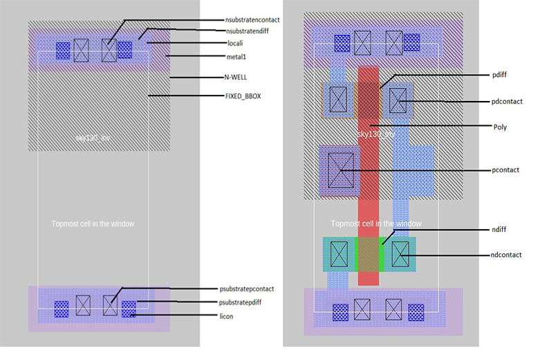

Compare with a real Magic layout
This app uses teaching colors. Magic colors depend on the technology file. The original screenshot below labels N-WELL, pdiff, ndiff, Poly and metal1. Click the image to enlarge it.

Source: Nickson Jose · VSD standard-cell design, Images/initial_metal2.jpg, unchanged. Apache-2.0 license.
| In this app | Identify in Magic |
|---|
| Lightly doped n-well | Well enclosure around the PMOS |
| p+ / n+ source-drain | Active/diffusion; a poly crossing defines a transistor |
| Gate | Poly strip crossing diffusion |
| Blue wiring | Metal 1, connected to diffusion/poly through contacts |
The build order explains the structure; it is not a fabrication recipe. Isolation (STI), dielectric, implants and design rules are simplified. Real layouts require DRC and LVS.